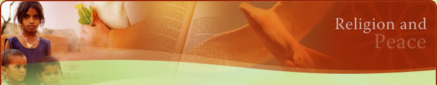

The Christian tradition makes significant contributions to world peace at a number of different levels. Among these are public statements by Church leaders, programs of action at local and international levels, organisations dedicated to bringing about peace, courses of study, commemorative days etc.


Content Description
Contribution of Christianity to World Peace
Public Statements
In recent decades, Church leaders have frequently made statements in support of peace. In some cases these statements have been specific appeals for peace in particular circumstances, however, on other occasions they have also published more comprehensive statements on the need for peace and the means of achieving it.
Establishment of peace
In the Catholic community, one of the more well known statements was the 1963 statement of Pope John XXIII "Pacem in Terris" (Peace on Earth). In Pacem in Terris John XXIII discusses an issue of critical importance to the establishment of peace - social rights and responsibilities that need to exist between people, between citizens and their political authorities, between nations, and between people and nations on a world wide level. Within this context, John XXIII addresses moral and cultural values, economic rights, political rights, disarmament, refugees, and the call to solidarity.
World Council of Churches
Other organisations such as the World Council of Churches and individual denominations such as the Society of Friends (Quakers) have also released many public statements relating to peacemaking. In the months before the beginning of the 2003 Gulf War, Christian Churches in the United States made frequent public appeals to avoid the conflict. The Society of Friends website contains excerpts from over forty statements from US Churches, many of them representing the views of groups of Church leaders from a particular State or region.
Similar statements were made throughout Europe and the UK. In Australia statements were made by leaders of most major Christian denominations together with representative statement issued by the National Council of Churches of Australia (NCCA).
Programs and Organisations
Peace Movement
There has always been a tradition of opposition to warfare in Church communities even during times when the Church actively used warfare for its own purposes. Francis of Assisi is a famous example of opposition to war. Another interesting example is the Society of Friends (Quakers), a Christian group with a pacifist stance.
In modern times there has been a powerful movement for peace emerging from within the ranks of Christian denominations. The modern peace movement, now embraced by a wide coalition of groups and individuals has a strong link to Christian peace groups in its infancy.
Movements such as the Catholic Worker movement led by Dorothy Day and Peter Maurin have been prominent in the quest for world peace. The Catholic worker movement developed an approach of active non-violence and often used civil disobedience as a means of protest.
Culture of Peace and Non Violence
Another well known organisation is the international group Pax Christi which has pioneered peacemaking at an international level for decades. In preparation for the coming of the third millennium, Pax Christi published a manifesto for a culture of peace and non violence. This manifesto came in support of the United Nations declaring a decade for a culture of peace and non violence beginning in the year 2000.
Pax Christi's declaration contained 6 principles which it invited people to take up as follows:
"Recognising my share of responsibility for the future of humanity, especially for today's children and those of future generations, I pledge - in my daily life, in my family, my work, my community and my region - to:
- respect the life and dignity of every person without discrimination or prejudice;
- practise active non-violence, rejecting violence in all its forms: physical, sexual, psychological economic and social, in particular towards the most deprived and vulnerable such as children and adolescents;
- share my time and material resources in a spirit of generosity to put an end to exclusion, injustice and political and economic oppression;
- defend freedom of expression and cultural diversity, giving preference always to dialogue and listening rather than fanaticism, defamation and the rejection of others;
- promote consumer behaviour that is responsible and development practices that respect all forms of life and preserve the balance of nature on the planet;
- contribute to the development of my community, with the full participation of women and respect for democratic principles, in order to create together new forms of solidarity."
(Pax Christi International: Manifesto for a Culture of Peace and Non Violence. 1999)
Decade to Overcome Violence
Also in response to the United Nations' decade for a Culture of Peace and Non Violence, the World Council of Churches in launched a campaign of a "Decade to Overcome Violence". This campaign provides an ecumenical dimension to the search for peace and highlights the commonalities held among Christian Churches in this area.
While this campaign includes a focus of violence in warfare it also recognises the widespread violence that occurs in many other situations and seeks to work towards peace.
The campaign of the Decade to Overcome Violence has also highlighted the tragic statistic that domestic violence is responsible for the deaths of more women worldwide than any other single cause.
Other important organisations include the Church and Peace alliances in Europe and the UK as well as the Kairos organisation in Canada and the USA.
Justice and Peace
In Australia major Christian denominations have organisations which have responsibility in working towards peace. These would include the Uniting Church Board of Social Responsibility and the Australian Catholic Social Justice Council. These organisations, together with the National Council of Churches of Australia have peacemaking as an important part of their mandate.
The element of working towards peace is carried out alongside other social concerns such as justice and ecology. This highlights the close relationship between the search for a more just society and the search for peace. Church organisations have frequently stated that the achievement of lasting peace will only be possible with a renewed social order where there poverty is substantially overcome and there is justice among people and between nations.
Courses of Study
Studies in Peacemaking
Throughout the world major learning institutions provide studies in peacemaking. Among these, universities run by Christian denominations often feature prominently in offering such courses.
Some significant organisations providing for the study of peace and peace making include the Washington based Center of Concern and the Maryknoll Justice and Peace Office.
In Australia the Society of Saint Columba (Columbans) have been prominent in providing peace education firstly through their Columban Mission Institute and through their Centre for Justice, Ecology and Peace.
Courses of study in peacemaking are available at major theological institutes such as the United Theological College and the Catholic Institute of Sydney.
Days of Commemoration
Anzac Day
Christian Churches have made use of significant days of commemoration to help focus people's attention on the need for peace. All major denominations will have special liturgical events on Anzac day. Many would also hold events on other occasions such as Remembrance Day and Hiroshima Day.
Over the past few decades the most significant day of commemoration and working for peace has been Palm Sunday. This has become a day for public gatherings, marches and rallies in support of peace. Christian churches have traditionally sponsored these events which usually begin with an ecumenical service followed by a rally and a march through city streets.
Palm Sunday Peace march
Palm Sunday rallies have become a regular feature of life in Australian cities. The numbers of people attending had tended to fluctuate depending on the world situation at the time. Very large numbers gathered in 2003 to protest against the war in Iraq. Smaller, but still quite significant numbers took part in subsequent years.